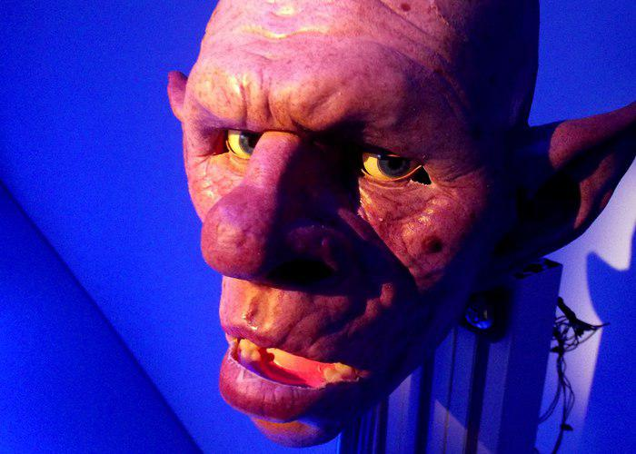
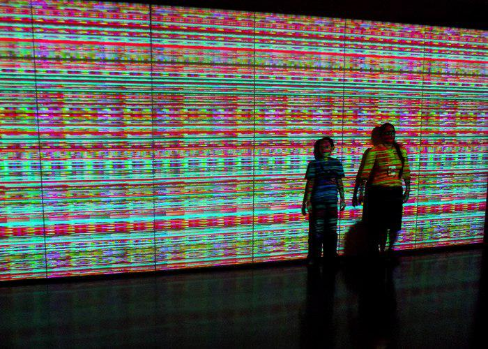
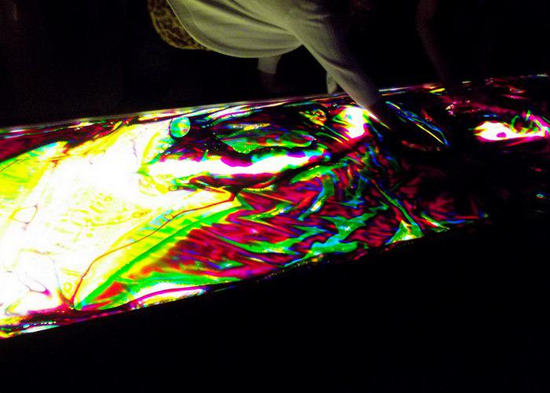

Festival Internacional de Linguagem Eletrônica
 Robinson, obra de Taiwan e Reino Unido, possui várias expressões faciais que mudam de acordo com a narrativa de uma história contata ao fundo.
No mês de Julho a cidade de São Paulo recebe mais uma edição da File (Festival Internacional de Linguagem Eletrônica), mostra mais de obras que unem a arte e a tecnologia, como instalações, projeções, video-arte, animações, games e mídias para os óculos 3d. Além da exibição interna, o prédio da Fiesp, na Av Paulista, onde acontece o evento, é iluminado pro projeções todas as noites com video-artes que dialogam com a proposta do evento.
Trazer para uma via de ampla circulação um evento gratuito com o que é de mais atual no meio da arte é sempre extraordinário. As obras procuram trazer novas visões para a tecnologia, menos utilitarista e hierárquica, mas sempre conversando com seu fator efêmero dos eletrônicos na era contemporânea. Mas o mais interessante é a quantidade de obras interativas: o contato não se limita às grandes televisões que formavam corredores no salão com controles e puffs para o publico jogar o que tem de mais original no mercado de games alternativos, alguns com óculos 3d e fones. Grandes objetos coloridos e barulhentos vindos do outro lado do oceano pediam para serem manipulados. Até uma máquina de Pinball totalmente digital estava disponível aos visitantes, e um óculos 3d que nos leva para dentro das pinturas de Van Gogh.
 Podia ser nossa amizade, mas você não colabora: The Indivisible veio do Japão e projeta píxels coloridos por uma parede
Uma das obras que mais chavama a atenção era a TAPE, que transpassava as paredes do evento e corria pelo lado externo do prédio. Era uma teia feita de fita adesiva, formando duto por onde era possível caminhar. A atração feita por artistas croatas e austríacos era cercada por uma extensa fila de pessoas ávidas a passear por ela.
Outra atração concorrida era "Be boy Be girl", obra holandesa que nos levava a uma praia através de óculos 3d, fones, aquecedores e uma leve brisa marinha feita por um ventilador enquanto deitamos em uma espreguiçadeira. Ao iniciar a atividade, podemos escolher se queremos um corpo feminino ou masculino, o qual teremos a impressão de nos pertencer durante o procedimento.
Além das obras puramente interativas, a exposição também conta com animações, video-arte e uma galeria de gifs. Aos domingos, conta também com shows musicais brasileiros, como a cantora Érica Alves. Alguns workshops também estarão acontecendo, consulte a programação no site.
O evento está em sua 17ª edição me pareceu ligeiramente menor do que a edição do ano passado. O site do evento também traz seu catalogo de obras, porem tem uma navegação difícil, o que é bem irônico. O catálogo físico pode ser adquirido na loja ao lado do salão de exposição por 30 golpes.
 Kalenjdoskop é uma obra alemã e que muda de cor ao ser tocada.
Evento
FILE 2016 – Festival Internacional de Linguagem Eletrônica
12 de julho a 28 de agosto
Galeria de Arte do SESI-SP | Centro Cultural Fiesp – Ruth Cardoso
Avenida Paulista, 1.313 – em frente à estação Trianon-Masp do Metrô
Diariamente, das 10h às 20h (entrada até às 19h40)
Livre para todos os públicos. Entrada gratuita.
Mais informações no site www.file.org.br
Agendamentos de grupos: segunda a sexta, das 10h às 16h,
pelo telefone (11) 3146-7439
http://www.sesisp.org.br/cultura/exposicao/file-2016.html